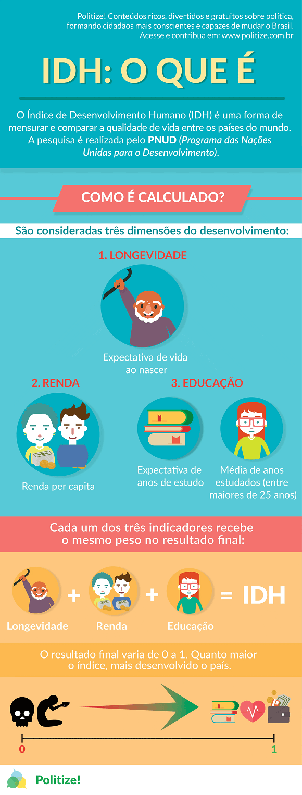
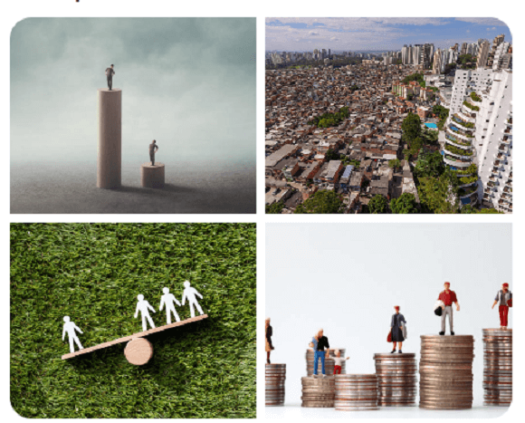
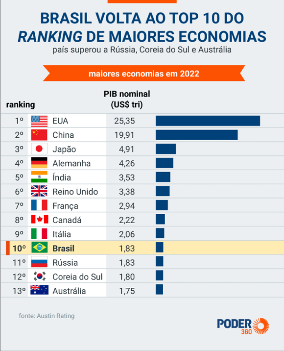
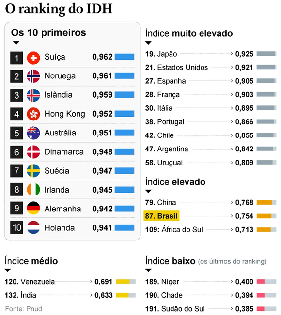
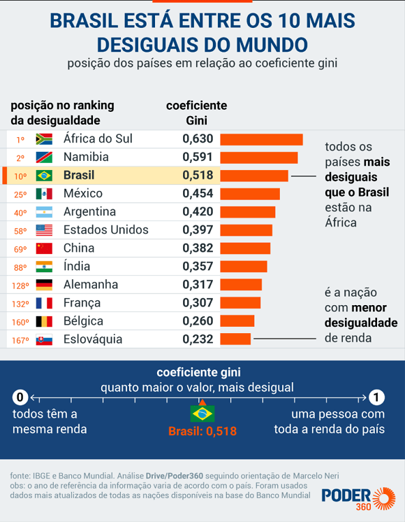
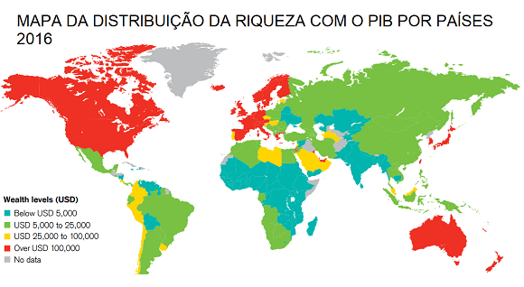
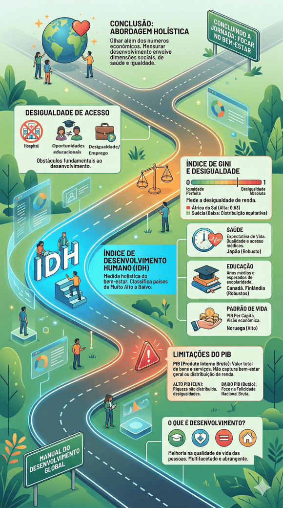

Conteúdo:
Objetivo: Citar e explicar as tentativas de medir o desenvolvimento, com destaque para o PIB, o IDH, o índice GINI e a desigualdade de acesso a elementos fundamentais.
Introdução
Na aula passada, mergulhamos nas complexidades que envolvem os fatores do desenvolvimento como os setores econômicos e as áreas consideradas fundamentais para qualquer país atualmente: educação, saúde e alimentação.
Hoje, nossa jornada nos leva a um tópico igualmente cativante e crucial: a mensuração do desenvolvimento e da qualidade de vida em escala global. Em um mundo diverso e multifacetado, é vital entender o progresso das nações e das sociedades não apenas por números econômicos, mas também por seu impacto real na vida das pessoas.
Questões para serem respondidas no caderno sobre o tema da aula de hoje:
1. O que o Índice de Desenvolvimento Humano (IDH) mede e quais são suas três dimensões principais?
2. Por que o Produto Interno Bruto (PIB) por si só não é suficiente para avaliar o bem-estar geral de uma população?
3. Como a expectativa de vida contribui para a mensuração do desenvolvimento humano de um país?
4. De que forma a educação é considerada no cálculo do IDH?
5. Qual é a relevância do PIB per capita na avaliação do padrão de vida de um país segundo o IDH?
6. Por que países com altos PIBs, como os Estados Unidos, podem não necessariamente refletir um alto nível de qualidade de vida para todos os seus cidadãos?
7. Como o Butão aborda o desenvolvimento de forma diferente de outros países?
8. O que o Índice de Gini mede e como ele é utilizado para compreender a desigualdade de renda em um país?
9. Qual é a diferença observada entre a África do Sul e a Suécia em termos de desigualdade de renda, baseando-se no Índice de Gini?
10. De que maneira a desigualdade de acesso a serviços fundamentais como saúde e educação pode impactar o desenvolvimento de um país?
Medindo o Desenvolvimento e a Qualidade de Vida
Você já se perguntou como avaliamos o desenvolvimento de uma nação? Muitas vezes, esse é um processo complexo que vai além de verificar seu Produto Interno Bruto (PIB). Avaliar o desenvolvimento envolve considerar várias dimensões, como saúde, educação, igualdade e a distribuição de renda.

Fonte: Fonte: https://www.politize.com.br.O Relatório de Desenvolvimento Humano das Nações Unidas, publicado anualmente, é uma ferramenta valiosa para entender o estado do desenvolvimento em escala global. Ele classifica países com base em seu Índice de Desenvolvimento Humano (IDH). O IDH é um indicador composto por três dimensões principais: saúde, mensurada pela expectativa de vida, educação, mensurada pelos anos médios de escolaridade, e padrão de vida, mensurado pelo PIB per capita.
Vamos explorar essas dimensões brevemente:
- 1. Expectativa de Vida: A expectativa de vida representa a média de anos que uma pessoa pode esperar viver em um determinado país. Ela é uma medida da qualidade de vida, do acesso a cuidados médicos e da segurança.
- 2. Educação: A dimensão educacional do IDH leva em conta os anos médios de escolaridade dos adultos e o tempo de escolarização das crianças. Isso reflete o investimento em educação, um dos pilares do desenvolvimento sustentável.
- 3. Padrão de Vida: O PIB per capita é uma medida econômica amplamente conhecida. No entanto, ele não é suficiente para avaliar o bem-estar geral de uma população, pois não leva em consideração a distribuição de renda. O IDH considera essa dimensão de forma mais abrangente.
O Relatório de Desenvolvimento Humano classifica os países em quatro categorias: muito alto, alto, médio e baixo desenvolvimento humano. Os dados e exemplos fornecidos neste relatório são ferramentas valiosas para compreender o estado do desenvolvimento global e, mais importante, para analisar o impacto real nas vidas das pessoas.
Ao abordarmos essa complexa questão da mensuração do desenvolvimento, é importante lembrar que o desenvolvimento é um processo multifacetado. Não podemos simplificá-lo a uma única métrica. A riqueza econômica é apenas uma parte da equação. As dimensões sociais, de saúde e igualdade desempenham um papel crucial no bem-estar de uma sociedade.
Desenvolvimento e Qualidade de Vida: Uma Visão Complexa
Quando falamos em desenvolvimento e qualidade de vida, estamos explorando um território complexo e multifacetado. Esses conceitos não podem ser resumidos a um único número ou métrica, pois abrangem uma série de dimensões que afetam diretamente a vida das pessoas. Nesta aula, vamos aprofundar essa discussão e explorar várias métricas que nos ajudam a entender o desenvolvimento de uma nação.
Significado de Desenvolvimento e Qualidade de Vida
O termo "desenvolvimento" é muitas vezes erroneamente associado apenas ao crescimento econômico, mas é muito mais abrangente do que isso. Desenvolvimento não se trata apenas de gerar riqueza; trata-se de melhorar a qualidade de vida das pessoas. Isso envolve a promoção de acesso à educação de qualidade, assistência médica adequada, moradia, segurança, igualdade de gênero, sustentabilidade ambiental e muito mais.

Fonte: https://www.pexels.com/pt-br/.Produto Interno Bruto (PIB)
O Produto Interno Bruto (PIB) ou (GPD – Gross Domestic Product em inglês) é uma métrica econômica amplamente utilizada para avaliar o desempenho de uma economia. Ele mede o valor de todos os bens e serviços finais produzidos em um país em um determinado período de tempo. Embora o PIB seja uma ferramenta valiosa, ele tem suas limitações e não captura todos os aspectos do desenvolvimento e da qualidade de vida.

Fonte: https://www.poder360.com.br/economia//Exemplo 1: Estados Unidos
Os Estados Unidos têm consistentemente um dos maiores PIBs do mundo. No entanto, uma análise mais profunda mostra que essa riqueza não é distribuída igualmente. A desigualdade de renda tem aumentado nas últimas décadas, e a falta de acesso universal a cuidados médicos é uma preocupação significativa. Portanto, o alto PIB dos EUA não reflete necessariamente um alto nível de qualidade de vida para todos os seus cidadãos.
Exemplo 2: Butão
Butão, um pequeno país no Himalaia, é um exemplo intrigante. Seu PIB é relativamente baixo em comparação com nações desenvolvidas, mas sua abordagem única para o desenvolvimento foca na felicidade nacional bruta, em vez do PIB. O Butão coloca grande ênfase na cultura, espiritualidade, preservação ambiental e igualdade. Embora o PIB seja modesto, a qualidade de vida de muitos butaneses é considerada alta devido a esses valores.
Rankings e Dados Internacionais
Para entender melhor as nuances do desenvolvimento e da qualidade de vida, podemos recorrer a rankings e dados internacionais. O Relatório de Desenvolvimento Humano das Nações Unidas é uma referência valiosa. Ele classifica os países com base no Índice de Desenvolvimento Humano (IDH), que considera dimensões como expectativa de vida, anos médios de escolaridade e PIB per capita. Isso nos permite avaliar o desenvolvimento de um país de maneira mais holística.
Exemplo 3: Noruega e Nigéria
A Noruega, frequentemente classificada como tendo um dos mais altos IDHs do mundo, se beneficia de sua riqueza de recursos naturais, educação de qualidade e um sistema de saúde abrangente. Em contraste, a Nigéria, embora seja uma das maiores economias da África, enfrenta desafios significativos em termos de saúde, educação e desigualdade, o que impacta seu IDH.
Índice de Desenvolvimento Humano (IDH): Uma Medida Abrangente do Bem-Estar Humano

Fonte: O Globo. 2023.Essa tabela apresenta o Índice de Desenvolvimento Humano (IDH) de 10 países em ordem decrescente, representando suas respectivas pontuações. O IDH é uma medida amplamente reconhecida que avalia o bem-estar humano em um país, considerando fatores como a expectativa de vida, educação e renda per capita. Quanto mais próximo o valor do IDH estiver de 1, maior é o desenvolvimento humano do país. Nesta tabela, países como Suíça, Noruega e Islândia lideram com índices de desenvolvimento humano muito elevados, enquanto países como Alemanha e Holanda também exibem níveis significativos de desenvolvimento. Esses números refletem a qualidade de vida e o bem-estar das populações dessas nações.
Ao explorar o desenvolvimento e a qualidade de vida, uma das métricas mais abrangentes e reconhecidas é o Índice de Desenvolvimento Humano (IDH). O IDH, apresentado no Relatório de Desenvolvimento Humano das Nações Unidas, visa capturar uma imagem mais completa do bem-estar humano em uma nação. Ele não se limita a aspectos econômicos, mas engloba três dimensões essenciais:
1. Saúde (Expectativa de Vida): A saúde é uma pedra angular do desenvolvimento. O IDH incorpora a expectativa de vida no cálculo. Por exemplo, o Japão, com uma expectativa de vida significativamente alta, tem um IDH robusto.
2. Educação (Anos Médios de Escolaridade): A educação desempenha um papel vital no desenvolvimento. O IDH avalia anos médios de escolaridade, levando em conta a educação primária e secundária. Países como Canadá e Finlândia têm um alto IDH, graças a seus sistemas educacionais robustos.
3. Padrão de Vida (PIB per capita): Embora o PIB por si só seja limitado, seu uso em conjunto com outras dimensões pelo IDH permite uma visão mais completa. A Noruega, com seu alto PIB per capita, é um exemplo disso.
Índice de Gini: Medindo a Desigualdade de Renda
A desigualdade é uma preocupação significativa no desenvolvimento. O Índice de Gini é uma métrica usada para medir a desigualdade de renda em um país. Funciona em uma escala de 0 a 1, onde 0 representa igualdade perfeita, e 1 representa desigualdade absoluta.

Fonte: https://www.poder360.com.br/economia/Exemplo: África do Sul vs. Suécia
A África do Sul tem um Índice de Gini de cerca de 0,63, indicando uma grande desigualdade de renda. Grande parte da população enfrenta dificuldades econômicas substanciais, enquanto uma pequena parcela acumula grande parte da riqueza.
Por outro lado, a Suécia, com um Índice de Gini mais baixo, reflete uma distribuição mais equitativa da riqueza. A combinação de políticas de bem-estar social e tributação progressiva contribui para essa menor desigualdade.
Desigualdade de Acesso a Elementos Fundamentais

Fonte: https://www.estrategiasdeinversion.comO acesso desigual a elementos fundamentais, como educação, saúde e emprego, é um obstáculo significativo para o desenvolvimento. Em muitos países, a desigualdade é evidente no acesso a serviços de saúde de qualidade. Por exemplo, nos Estados Unidos, o acesso a cuidados de saúde pode ser limitado para aqueles que não têm seguro de saúde, o que resulta em disparidades na saúde.
Da mesma forma, a desigualdade de acesso à educação é observada em todo o mundo. Em alguns países, as oportunidades educacionais são desiguais com base no gênero, origem étnica ou geografia, o que restringe o potencial de desenvolvimento de muitos.
O tema de medir o desenvolvimento dos países, portanto, nos leva a refletir sobre a complexidade desse processo e a importância de considerar múltiplas dimensões além dos indicadores econômicos. É uma jornada que nos desafia a olhar além dos números e a compreender o verdadeiro impacto nas vidas das pessoas. A mensuração do desenvolvimento é uma tarefa multifacetada que envolve aspectos sociais, de saúde e igualdade, reforçando a necessidade de abordagens holísticas para promover uma qualidade de vida cada vez melhor em todas as nações.
QUESTÃO PRÁTICA 01
Um país possui um Produto Interno Bruto (PIB) muito alto, figurando entre as maiores economias do mundo, porém apresenta baixos índices de alfabetização e expectativa de vida. Sobre essa situação, é correto afirmar que:

QUESTÃO PRÁTICA 02
O Índice de Gini é uma ferramenta estatística utilizada para medir a desigualdade social. Se um país apresenta um índice de Gini próximo a 1 (ou 100), isso significa que:
Infográfico - Resumo

Fonte: Organizado e revisado pelo autor.A curiosidade e a vontade de entender o mundo ao nosso redor são fundamentais para fazer perguntas e contribuir com a construção do conhecimento científico.
P: Por que o Produto Interno Bruto (PIB) nem sempre é uma medida suficiente para avaliar o desenvolvimento de um país? Quais são suas limitações?
R: O PIB é uma medida que avalia a produção total de bens e serviços em um país. No entanto, ele não considera fatores importantes, como a distribuição de renda. Isso significa que um país com um alto PIB per capita pode ainda ter uma grande desigualdade de renda e qualidade de vida precária para muitos de seus cidadãos. Além disso, o PIB não leva em consideração outros indicadores cruciais de desenvolvimento, como a educação, a saúde e o bem-estar social.
P: O que é o Índice de Desenvolvimento Humano (IDH) e como ele difere do PIB na avaliação do desenvolvimento de um país? Forneça exemplos de como essas medidas podem variar em diferentes nações.
R: O Índice de Desenvolvimento Humano (IDH) é uma medida mais abrangente que inclui PIB, expectativa de vida e anos médios de escolaridade. Ele oferece uma visão mais holística do desenvolvimento de um país, levando em consideração não apenas o aspecto econômico, mas também a saúde e a educação. O IDH varia de 0 a 1, sendo 1 o desenvolvimento máximo. Por exemplo, a Noruega tem um IDH muito alto (0,957), graças ao seu alto PIB per capita, educação de qualidade e sistema de saúde. Já o Chade tem um IDH baixo (0,404) devido a desafios econômicos, de saúde e educação.
P: Como o Índice de Gini é usado para medir a desigualdade de renda em um país? Explique como a desigualdade de renda pode impactar o desenvolvimento econômico e a qualidade de vida.
R: O Índice de Gini é uma medida que avalia a desigualdade de renda em uma sociedade, variando de 0 (igualdade total) a 1 (desigualdade total). Ele calcula a distribuição de renda, mostrando quão equitativamente (ou desigualmente) a renda é distribuída entre os cidadãos. Quando a desigualdade de renda é alta, significa que uma pequena parte da população detém a maior parte da riqueza, enquanto a maioria possui recursos limitados. Isso pode resultar em disparidades significativas no acesso a serviços, educação e oportunidades de emprego, afetando negativamente o desenvolvimento econômico e a qualidade de vida para a maioria dos cidadãos. Por outro lado, sociedades com uma distribuição de renda mais equitativa tendem a experimentar um desenvolvimento mais equitativo e uma qualidade de vida mais elevada para a população em geral.
Antes de finalizar, volte ao início fazer as questões!
Para saber mais:
Referências Bibliográficas
VESENTINI, José William. Geografia: o mundo em transição.
Ensino médio. 2. ed.
São Paulo: Ática, 2013.
VOGLER, Christopher. A jornada do escritor. Rio de Janeiro: Nova Fronteira, 2006.
BRASIL. Ministério da Educação. Base Nacional Comum Curricular. Brasília: MEC/CONSED/UNDIME, 2018.